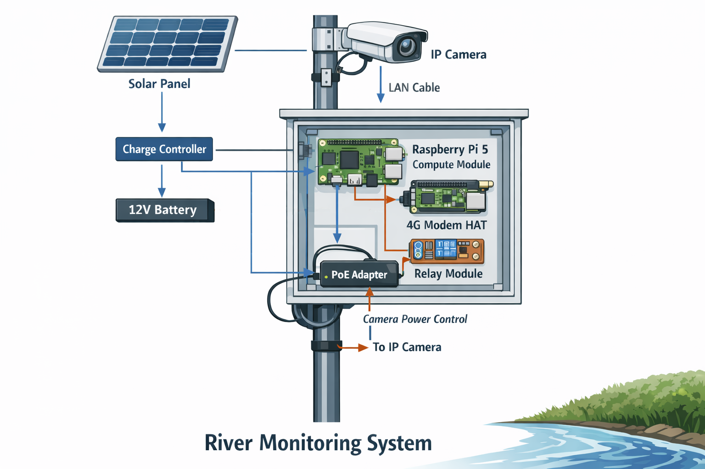

A typical set of parts#
Once the software is installed, you will need a proper setup in the field. We provide guidance here how to establish a complete field setup.

Impression of a typical hardware setup and the required connections :scale: 50 % :alt: hardware setup#
We here turn to more practical guidance. To help you build your own camera setup we here give an overview of possible parts that we have ourselves tested with. You will see that these parts broadly cover what we have described in the previous section. The figure above gives an impression what the entire build would look like. Some details are left out for simplicity, but the general idea should be clear: your small electronic components and most of the wiring is inside an enclosure. The camera and the power supply are outside. If your battery is small enough you can place it in the same enclosure.
We assume a setup with solar power and running every 30 minutes. We are not frequently and actively maintaining the parts list. Please let us know if anything seems out of order by creating a Github issue on the ORC-OS-docs GitHub repository.
Warning
We do NOT give any guarantee that with these parts, your build will work. We also do not give any support without a agreed project. It may be that certain parts change in time. We are never responsible for any issue related to your own build nor for any incompatibilities with the ORC-OS software.
Part |
Example specific item |
|---|---|
Raspberry Pi 5 CM (8/32GB) |
|
Compute Module board (8/32GB, note that there are also industrial grade options, that can handle a larger temperature range, but these are more expensive and may be more difficult to get). |
|
Active cooler for Raspberry Pi 5 |
|
Rechargeable battery for Real-Time clock and power management. For larger carrier boards, a CM/ML2032 is needed. For smaller boards, (e.g. the Waveshare CM5 IO Base-B) typically a CR/ML1220 is needed. The normal Raspberry Pi 5 model with SD card has a special prepared battery. |
Please check availability locally. 3.7V LIR rechargeable batteries typically work. The battery does not have to be rechargeable, but it is more convenient as you do not have to replace it when it runs out. |
Weather proof IP camera (ideally >= 20Mbps, 1080p, capable to record on event-basis, e.g. during startup, or at time-intervals). |
|
4G modem (can also be a Raspberry Pi modem HAT like a Waveshare7600E-H) |
Waveshare7600G-H industrial modem You may also get a 7600G-H chipset on a HAT or other device. HATs may be more sensitive to cable damage as the cables are quite small. They all work in a similar way. |
Relay module (can be a Pi HAT or a separate layout, if you need more peripherals, relay boards of 8 relays with Raspberry Pi header are available also). |
|
PoE adapter (12V; verify power specs). The one indicated below is very nice, as it can directly be connected to the solar charge load output (12V) with a simple +/- wire, and provides all the switch options you will need. Just be careful NOT to use the “passive PoE LAN port” (only one) on a device that is not designed for it, as this can damage your LAN port. |
|
12V to 5V (USB) buck converter, 5A for Raspberry Pi 5. The device indicated here is very easy to use as you do not need to tweak the voltage or current. Just connect the 12V input and you get a stable 5V 5A output. We recommend to put a spare one inside the housing in case it fails. |
Sold on amazon.com e.g. DEVMO 12V to 5V 5A Step-Down |
CAT6 outdoor network cable of sufficient length to go from the PoE adapter to the camera |
Any computer hardware shop. |
USB-C “open end” cable that can handle 5A current. This is for connecting the buck converter to the Raspberry Pi. |
E.g. this link |
A very short (e.g. 0.5 meter) CAT6 network cable. This is for connecting the Raspberry Pi to the switch. |
Any computer hardware shop. |
Solar panel (>= 50W) |
Any electronics/solar shop. |
MQTT Solar charge controller |
Any electronics/solar shop. |
12V battery (>= 96Wh) |
Any electronics/solar shop. Consider a compact LiFePO4 battery for better environmental performance. Note that the battery size required will be strongly dependent on the frequency of observations, the total power requirements of your setup, and the amount of sunlight in your location. We recommend to calculate your power requirements carefully. If your battery empties, the solar charge controller will stop providing power to the setup, until the battery is sufficiently charged again. After that the setup will automatically start again. So even with a smaller battery, you can still get a working setup, but it may be less stable and you may have more “downtime” of your camera. |
+/- terminal connectors compatible with the 12V battery. |
Any electronics shop. |
A fuse (e.g. 5A or 7A) for safety, to be placed directly behind the “+” terminal of the battery. We like fuse holders with a blade fuse, as it makes things so simple to replace but there are many options for this. Also here, recommended to put a few spare fuses inside the housing in case of failure. |
Any electronics shop. |
a IP66 (minimum) enclosure. Look for one that has optional cable outlets so that you can bring +/- of solar panel into the device and a network cable out. At least two cables will need to pass through. If you need more holes, carefully prepare these with a step drill. Ideally get one or two DIN rail pieces in the box for proper and neat device and cable management. |
Sold on amazon.com, but look carefully for one, large enough, and with the proper cable options. |
watertight cable enclosures |
Sold on amazon.com e.g. 3.5-10mm waterproof IP68 electrical cable connectors |
passthrough cable connectors for watertight connection where cables enter/exit the enclosure. |
Sold on amazon.com e.g. QILIPSU NPT Cable Gland Waterproof IP68 |
You will need basic tools such as:
a wire stripper.
a drill to make holes in the enclosure for cable glands and connectors. for drilling holes in the enclosure, we recommend using a step drill bit, as this allows you to make holes of different sizes with the same bit, and it is less likely to crack the enclosure compared to a regular drill bit. Let the drill do its work! Do not apply too much pressure.
a small cutter.
small screw drivers (phillips and flat head, for terminals and relay connections).
a crimping tool for the terminal connectors.
a crimping tool for crimping electrical ferrules on your cable ends.
a multimeter to check voltages and connections.
You will also need basic electrical components:
when you use HATs, get some stacking headers, heighteners and screws. These are needed to raise the HAT to a higher level to make enough space. A stacking header can be inserted into the Raspberry Pi 40-pin GPIO header to create a gap between the Raspberry Pi and the HAT, allowing for better airflow and easier access to the GPIO pins.
12V electric wire (wire used for speakers usually is great for 12V projects, but never use this for 220V applications!). We recommend at least 0.75mm2 (or 18 AWG) for the 12V connections to ensure a stable power supply and minimize voltage drops, especially if you have a longer distance between the battery and the Raspberry Pi. For shorter distances, 0.5mm2 (or 20 AWG) may be sufficient, but always check the specifications of your wire and consider the current requirements of your setup.
terminal and cable connectors for the 12V battery and charge controller connections.
a splitter that can split the 12V output from the charge controller into several outputs, e.g. one for the buck converter and Pi, and one for the PoE switch.
Ferrules for electrical wire. Ferrules are used to protect the ends of stranded wires and provide a secure connection when inserted into terminal blocks or connectors. They prevent deterioration of the wire strands and ensure a reliable electrical connection, also over longer periods of time. If you do not apply this, loose copper wires may in time oxidize, get loose from the terminal and cause problems in your power supply. It may even lead to short cuts and very bad cases to fire hazard.
isolation tape for safety to cover exposed wires and connections.
Optional but highly recommended:
to get a nice clean build, we recommend getting a (or two) so-called DIN rail in your enclosure. This allows you to neatly mount your Raspberry Pi, relay board, modem and buck converter on the DIN rail. For industrial components (such as the suggested PoE switch and buck converter) a DIN rail mount is integrated. Simply click it on and you are done!
For Raspberry Pi 5 CM, DIN rail mounts can be acquired also from shops like Amazon. Just make sure to get the right one for your carrier board. Sometimes it is easier to get a pretty generic DIN rail mount and use some drilled holes and screws to fix your equipment. These are very cheap to get.
Read in the next section for guidance on how to assemble these parts into a working setup.